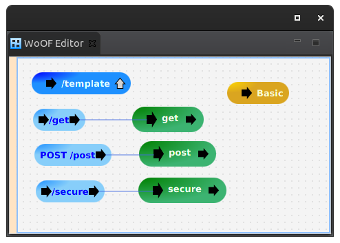
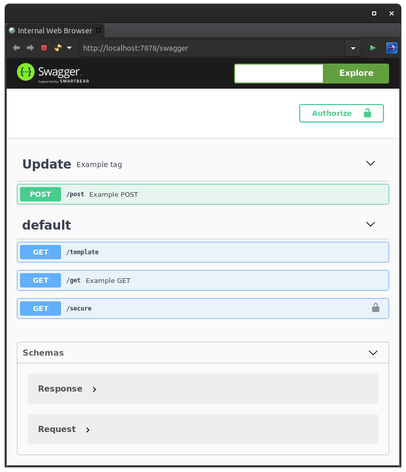

This tutorial demonstrates using OpenAPI / Swagger to document available REST end points.
The example application for this tutorial has the following configuration:
To configure OpenAPI / Swagger into an application, add the following to pom.xml
<dependency> <groupId>net.officefloor.web</groupId> <artifactId>officeweb_openapi</artifactId> </dependency>
This is all that is necessary.
Once added the Swagger becomes available:
The defaults are generally adequate to document most applications. However, if more control is required, the OpenApiOperationExtensionServiceFactory provides means to customise the OpenAPI.
The next tutorial covers CORS.